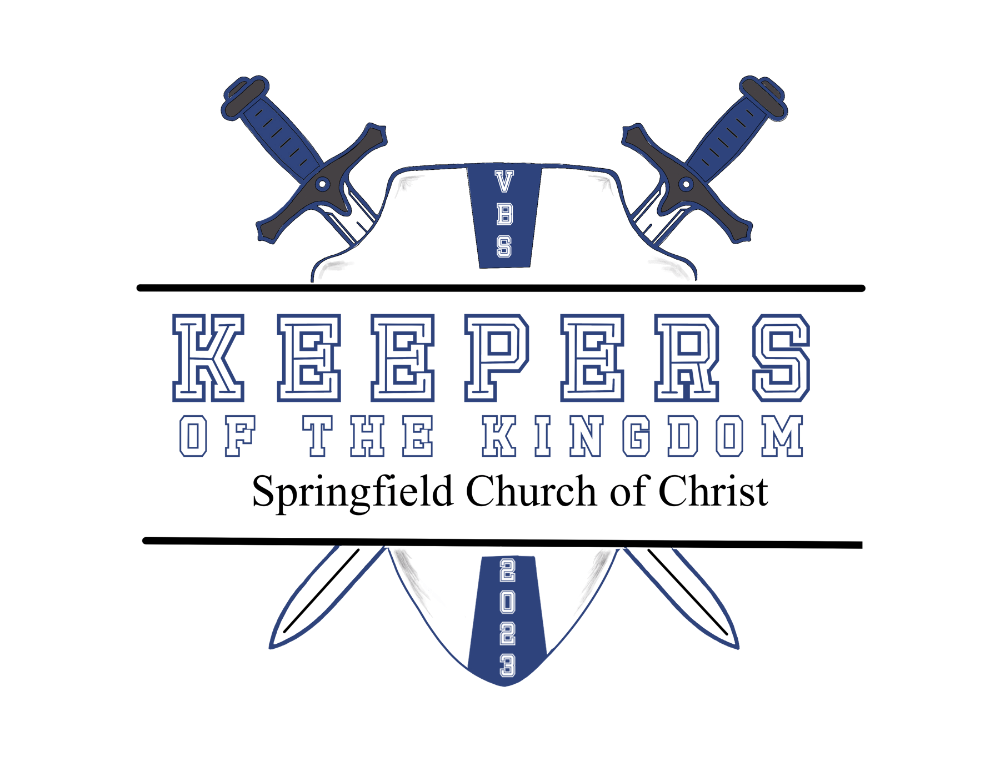
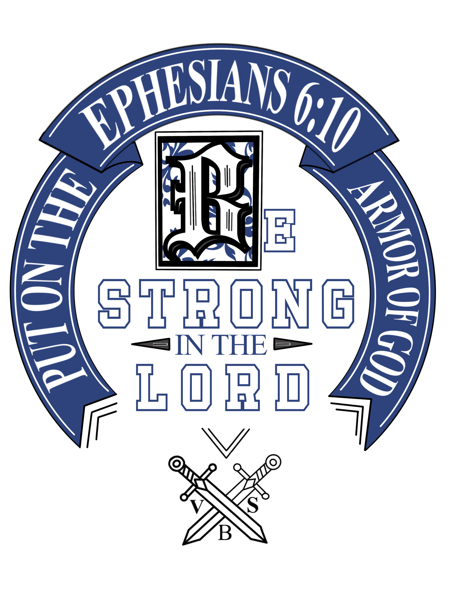
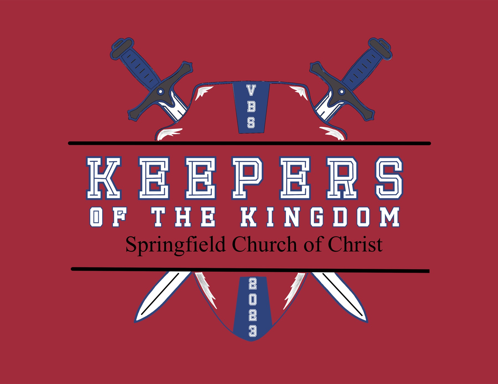
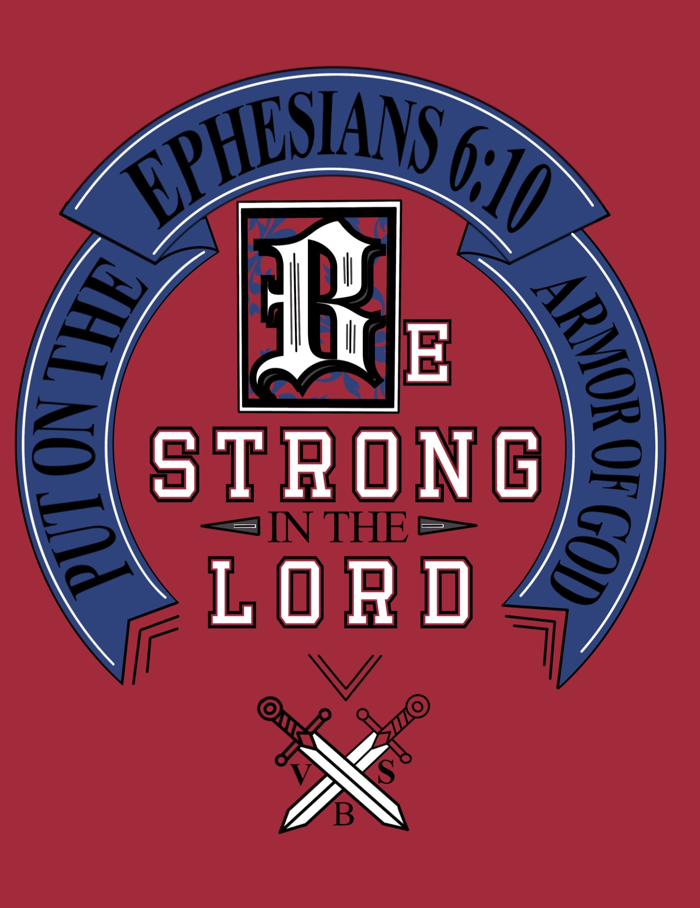

Case Study 005 · Graphic / Visual Design
Graphic Design · Apparel Design · Visual Identity · Production
Keepers of the Kingdom
Designing a volunteer identity for 2023 Vacation Bible School.

- Organization
- Springfield Church of Christ
- Year
- 2023
- Role
- VBS Committee Chair, Designer & Production Lead
- Audience
- 28 VBS volunteers
- Timeline
- About 2.5 months
- Production
- DTF transfers, applied in-house
- Budget
- About $280 total, about $10 per shirt
- Discipline
- Graphic / Visual Design
The Challenge
About two and a half months before our 2023 Vacation Bible School, Keepers of the Kingdom, we discovered that the official volunteer shirts offered with the VBS materials were sold out.
The shirts weren't simply event merchandise. We wanted all 28 volunteers wearing coordinated apparel so children could quickly recognize the adults who were there to teach, help, and provide direction.
As chair of the VBS committee, I first looked for another source for the existing shirts. When that proved unsuccessful, I proposed another solution: design and produce our own.
The new shirts had four jobs:
Coordinate with the medieval theme
Belong to the established VBS visual world, not compete with it.
Fit the existing VBS budget
No new money. The shirts had to come out of what was already planned.
Identify volunteers across the building
Distinctive enough that a child could find a helper at a glance.
Comfortable and durable
Something volunteers would want to keep wearing after the event.
Building on an Existing Visual Identity
Rather than create an unrelated identity, I used the visual language of the original VBS materials as a starting point and developed artwork specifically for our congregation.
The primary back design centered on the message “Be Strong in the Lord,” supported by Ephesians 6:10, “Put on the Armor of God,” medieval-inspired typography, and crossed swords. I wanted the artwork to do more than identify the event. It needed to reinforce the scriptural message behind the week's theme.
I experimented with several typefaces and approaches to typographic hierarchy before arriving at the final composition. The finished design needed to feel medieval without sacrificing readability.
The design finally clicked when those goals came together: distinctive and thematic, but still understood immediately.
Designing a Front-and-Back System
Instead of placing the same graphic on both sides, I developed two complementary treatments.
For the front, I created a smaller event identifier incorporating the Keepers of the Kingdom name, Springfield Church of Christ, 2023, and sword and shield imagery. The large back graphic carried the primary visual and scriptural message.
The result is a hierarchy suited to the garment: a smaller identifying mark on the front and a larger statement graphic on the back.



Color as a Functional Decision
The shirt color was not chosen independently from the artwork.
After determining the colors needed to coordinate with the existing VBS materials, I reviewed the garment colors available from the supplier in the quantities and sizes we needed. I tested how the artwork would interact with those backgrounds before selecting the final raspberry-red shirt.




Digital color studies used to choose the garment color. Process artwork, not photographs of the finished shirts.
The final raspberry color accomplished something even more important: visibility.
Navy, black, or another common shirt color could easily disappear into a crowd. Raspberry was unusual and immediately recognizable. During VBS, children learned that the adults wearing the bright red shirts were their teachers and helpers.
What began as a color decision became part of the event's wayfinding and identification system.
From Design to Production
Designing the graphics was only part of the project. I also needed to work out how to manufacture 28 shirts affordably within our remaining timeline.
I researched several production options before choosing direct-to-film, or DTF, transfers. Durability and comfort drove that decision. I specifically wanted to avoid the thick, inflexible feel sometimes associated with DIY transfer methods and reduce the chance of graphics peeling after only a few washes.
After receiving committee approval and folding the project into the VBS budget, I sourced both the garments and transfers from the same supplier. I also chose to receive the transfers uncut to reduce costs, then cut each one myself before production.
Solving for Consistency
Applying a graphic to one shirt is relatively simple. Producing 28 consistently across a range of garment sizes required a repeatable process.
- Test on spares.I used extra shirts and transfers to test application and positioning. A couple of early attempts revealed alignment issues before the primary run.
- Judge each size.A placement that looked proportional on an average shirt didn't necessarily work at the smallest and largest sizes.
- Build a template.A positioning template kept the graphics centered and consistently placed while still accommodating those size differences.
- Follow the spec.I followed the transfer manufacturer's application instructions carefully, prioritizing proper adhesion and long-term durability.
Production ultimately took the better part of a day.
The Result
All 28 volunteers received their shirts at no charge before VBS. The production cost of about $280, roughly $10 per volunteer, delivered custom front-and-back apparel while staying within the event budget.
More importantly, the shirts did their job. Children quickly associated the distinctive raspberry shirts with the adults responsible for teaching and helping them. Instead of functioning only as matching apparel, the shirts became a recognizable visual system throughout the event.
The coordinated graphics also gave the 2023 VBS its own identity. Repeated across the volunteer team, the artwork reinforced both the medieval visual theme and the scriptural message behind Keepers of the Kingdom.
Volunteer response also validated the production choices. The quality and comfort of the garments and transfers made the shirts something volunteers could keep wearing, not disposable event apparel.
Project at a Glance
28
Volunteers outfitted
about 2.5months
Problem identification to event
about $280
Total production cost
about $10
Approximate cost per shirt
2-sided
Custom apparel system
What I Learned
This project started with a supply problem, but it required much more than creating a graphic. In about two and a half months, I moved through every stage myself:
Producing all 28 shirts myself gave me direct control over quality, but it also exposed an inefficiency in my process. On a future project of this scale, I would keep the testing and quality-control procedures but delegate more of the repetitive production work.
Good design doesn't end when the artwork is finished. It also has to survive budget, materials, manufacturing, deadlines, and actual use.